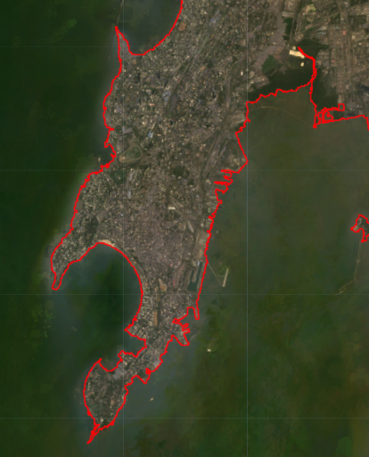

My project aims to develop a live dashboard focused on tracking environmental hazards, changes, and resource management. The specific topic has not been finalized, but the project may explore techniques to monitor and analyze natural features such as forests, glaciers, and coastlines using imagery.

To ensure regular and automatic updates, the project will rely on a frequently updated data source with API. This will enable seamless integration and automation, allowing the dashboard to display real-time and up-to-date information. The project aims to provide valuable insights and contribute to environmental monitoring and resource management efforts.